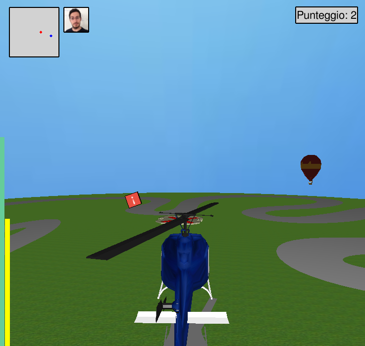
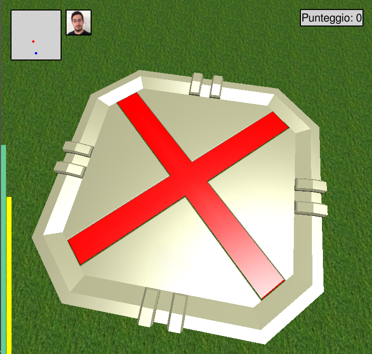

HELIX
HELIX è un videogioco 3D in terza persona interamente sviluppato in C++ mediante l'ausilio delle librerie
OpenGL ed SDL in ambiente LINUX come progetto finale per il corso di Grafica tenutosi nell'anno 2015/2016 dal prof.
Giulio Casciola nell'Università Alma Mater degli Studi di Bologna. In questo sito web, architettato come
relazione conclusiva, presenteremo i vari passi che sono stati compiuti nelle realizzazione di HELIX,
soffermandoci in particolare sulle funzioni utilizzate per la creazione degli oggetti nella scena, della scenografia,
dell'illuminazione, nonché delle texture che sono state impiegate.


Genesi del gioco
Per la creazione di HELIX si è preso spunto dal Progetto Car mostrato a lezione, che vedeva protagonista del
videogioco una Ferrari lanciata a tutta corsa su un circuito. Originariamente, si era pensato di sostituire
unicamente l'oggetto principale al fine di trasformarlo in un elicottero, in grado, di conseguenza, di librarsi
in aria e poter esplorare lo scenario da altri punti di vista. Così sono iniziati i primi esperimenti. In primo
luogo, si è avuta la necessità di capire come aggiungere degli oggetti in OpenGL che simulassero il movimento delle
pale dell'elicottero. Grazie ai metodi glRotate e glTranslate, oltre che ad un efficiente ciclo
degli eventi, è stato possibile raggiungere questo primo risultato.
Una volta ottenute le eliche, ci si è concentrati sul movimento dell'elicottero, il quale deve chiaramente rispettare
diversi requisiti: non deve essere in grado di muoversi se ancorato al terreno, non deve sprofondare nel terreno, può
librarsi in aria e, solo quando questo stato viene raggiunto, il movimento nel mondo diventa possibile. A tutto questo
si aggiunge il fatto che sia l'elica superiore che posteriore devono continuare a muoversi durante tutte queste operazioni,
oltre che ad elicottero fermo. Si è avvertita dunque la necessità di creare un motore fisico che simulasse
grossolanamente tutte queste attività. Un metodo DoStep ed un metodo EatKey insieme ad un intelligente
uso delle classi in C++, ha reso possibile questo ulteriore sviluppo. In questa fase, inoltre, non si era ancora
sicuri di che tipo di elicottero si sarebbe andato ad usare nel gioco completo, ragion per cui sono state mantenute
le ruote al prototipo, in maniera tale da non precludersi alcuna possibilità.
A questo punto, il modello creato era abbastanza fedele alla corrispettiva versione originale. Quello che mancava
era un tocco di realismo, che ci è stato fornito da una mesh poligonale. Sono state importate e testate diverse
mesh all'interno del programma e alla fine se ne è scelta una non particolarmente complessa e con un numero non
eccessivo di poligoni. In certe versioni che usavano un numero maggiore di poligoni infatti si è avvertita una
sensibile diminuzione delle prestazioni, ragion per cui ci si è mantenuti su un modello semplice.
Tale modello è stato importato su Blender, un software libero e multipiattaforma di modellazione, rigging,
animazione, compositing e rendering di immagini tridimensionali.
Qui l'oggetto è stato leggermente modificato e le sue parti sono state separate ed esportate come file
.obj differenti, al fine di poterle importare nel programma come componenti diverse, gestire al meglio le parti
mobili e poterle personalizzare singolarmente (ad esempio con un diverso uso dei colori e/o delle texture).
A processo ultimato, l'elicottero era pronto e si è passati a riflettere sull'ambientazione e sullo scopo che il
gioco stesso avrebbe avuto nella sua fase finale.
Scopo del gioco
In HELIX il giocatore è chiamato a guidare un elicottero e ad accumulare quanti più punti possibili prima dello scadere
del tempo. La posizione iniziale dell'elicottero è il centro della scena (dove risiede anche la sua base). L'utente
può esplorare lo scenario unicamente facendo volare l'elicottero e muovendolo quando si trova in aria. All'inizio,
in una posizione casuale, appare un cubo rosso con un punto esclamativo disegnato sopra.
Se l'elicottero riesce a raggiunge il cubo, si viene premiati con un punto, ed un altro cubo rosso compare in un diverso
punto casuale della scena. Nella minimappa in alto a sinista il giocatore può vedere in ogni istante la sua posizione
(pallino blu) e quella del target (pallino rosso). Saltuariamente, appare nella scena anche un cubo viola
semi-trasparente (e quindi difficile da individuare), con una corona disegnata su di esso. Se catturato,
permette di guadagnare ben due punti extra invece di uno solo. Chiaramente il cubo viola non viene segnato sulla mappa e
se, al momento della sua comparsa, venisse catturato un cubo rosso, allora il cubo viola svanirà, facendo perdere
all'utente la possibilità di guadagnare preziosi punti aggiuntivi.
In basso a sinistra nella schermata sono presenti due indicatori: la barra verde mostra gli fps al secondo raggiunti
(vuota per 0 fps e piena per 100 fps), mentre la barra gialla al suo fianco, presenta i secondi rimanenti all'utente
prima che il gioco si interrompa. Vicino alla minimappa è presente un altro indicatore che mostra un'immagine del
programmatore di HELIX. Quando saremo vicini allo scadere del tempo, la fotografia cambierà, informando l'utente
in maniera più immediata che i secondi a sua disposizione stanno per esaurirsi. Inoltre, all'apparizione del
cubo premio speciale, l'immagine assume toni di grigio, al fine di avvertire l'utente che "da qualche parte" nel
mondo di gioco è apparso un cubo viola.
In alto a destra dello schermo, invece, viene mostrato il punteggio raggiunto fino a quel momento.
L'obiettivo del gioco è quindi quello di raccogliere quanti più
punti possibili prima dello scadere del tempo a disposizione, momento dopo il quale viene mostrata una schermata di
Game Over con i punti che si è riusciti ad accumulare durante la partita.
Controlli
Per i controlli di gioco ci si è serviti della libreria SDL, la quale permette di creare un ciclo
degli eventi e di gestire più o meno tutti i tipi di input che l'utente è in grado di immettere. Gli event type
SDL_MOUSEMOTION e SDL_MOUSEWHEEL hanno permesso di interpretare correttamente il movimento del
mouse, la pressione del tasto sinistro sopra di esso e la rotellina al centro. Nell'implementazione realizzata,
quando la telecamera è libera, è possibile ruotare il punto di vista mediante il trascinamento e la pressione del
tasto sinistro del mouse, mentre lo zoom viene eseguito dalla rotellina. Usando gli eventi SDL_KEYDOWN e
SDL_KEYUP si è andata a gestire invece la pressione dei tasti sulla tastiera. In particolare, con W, A, S, D è possibile
muovere l'elicottero nelle quattro direzioni (W funge da acceleratore, quindi deve rimanere premuto quando si vuole
girare) mentre con Q ed E si può salire o scendere di quota. Per l'implementazione di questi movimenti sono stati
fondamentali il metodo EatKey, DoStep e la variabile velVolante: grazie ad essi ci è permessa la
modifica dei parametri presenti nella classe Helix, che definisce l'elicottero, e realizzare, di conseguenza,
il suo movimento (metodo Render).
Contemporaneamente, sono stati resi attivi i tasti da F1 a F5 per avere la possibilità di modificare la resa visuale
e grafica della scena. In dettaglio, con il tasto F1 è possibile cambiare la telecamera per la guida dell'elicottero
(alle spalle, fiancale, in alto, in basso, libera), con F2 è possibile osservare il mondo in wireframe, con F3 si
può decidere se l'elicottero deve essere colorato oppure se alla superficie dell'oggetto deve essere
applicata una texture, con F4 si può cambiare il rendering dell'erba (ancora una volta colori o texture) e
infine con F5 possiamo nascondere l'ombra dell'elicottero stesso.
SDL mette a disposizione tutti gli strumenti per cattuare questi eventi.
Accanto al classico input da tastiera, è stato implementato anche l'input da joystick. Per gli esperimenti è stato
usato il Controller Avanzato PC di Gamestop. Mediante gli event type SDL_JOYAXISMOTION, SDL_JOYBUTTONDOWN
e SDL_JOYBUTTONUP, messi a disposizione da SDL, è possibile infatti cattuare la pressione dei tasti e il movimento della
levetta analogica. Il conseguente movimento dell'elicottero è stato possibile grazie all'uso del metodo Joy,
definito nel controllore della classe Helix.
A questo punto i controlli sono stati quindi così determinati: mediante il tasto 3 è possibile accelerare, mentre con
il tasto 4 ci si può spostare all'indietro;
con i tasti 7 e 8 l'elicottero viene mosso verso il basso o verso l'alto. Con 5 e 6 si può
passare dall'applicazione delle texture all'uso dei colori per l'elicottero e per il terreno erboso. La telecamera
viene modificata con il tasto 9 e si è in grado di osservare lo scenario in wareframe con la pressione del tasto 10.
Infine, l'ombra dell'elicottero viene modificata grazie al tasto 1. In una prima implementazione, il movimento up-down
del joystick era stato impostato per accelerazione e retromarcia, tuttavia sembra che SDL catturi un numero così
elevato di eventi di questo tipo che il sistema risente pesantemente della cosa, avvertendo cali di frame e arrivando
quasi al freeze dell'applicazione. Per questi motivi si è passati ad un più congeniale pulsante di accelerazione.
Dettagli Tecnici
In questa sezione, divisa in sottoparagrafi, presenteremo i dettagli tecnici e le scelte implementative che sono
state adoperate nella creazione di HELIX, dalle mesh utilizzate, all'illuminazione, fino a parlare dellle texture.
L'elicottero
L'elicottero è stato il primo oggetto mesh ad essere introdotto nell'ambiente di gioco. La sua mesh è stata scaricata
da internet e caricata su Blender, dopodiché è stata divisa in parti diverse, ciascuna salvata in un file separato.
Abbiamo ottenuto rispettivamente: la carlinga, i finestrini e la base di appoggio, l'elica superiore, l'elica posteriore.
Far ruotare l'elica superiore è stato semplice: è bastato applicare una glRotate lungo l'asse desiderato per
ottenere un effetto soddisfacente (e ci si è serviti, per questo, anche di una variabile mozzo che,
decrementandosi, permette di simulare il movimento). L'elica posteriore ha presentato invece maggiori problemi,
dal momento che la sua rotazione non avviene lungo uno degli assi principali. Per realizzare il movimento ci
si è traslati dunque fino al suo centro, si è compiuta la rotazione lungo l'asse desiderato e infine si è operata la
traslazione opposta, ritornando alla situazione originaria. I diversi pezzi dell'elicottero sono stati quindi
colorati in maniera diversa per rendere la mesh più credibile. Alla carlinga è stata applicata anche una texture,
mediante il metodo SetupEnvmapTexture con generazione automatica delle coordinate texture, feature messa
a disposizione da OpenGL. Il risultato è uno sphere mapping lungo tutta la superficie dell'elicottero che ha
fornito anche un gradevole effetto metallico alla carrozzeria dell'elicottero. Notiamo esplicitamente che,
essendo questo l'oggetto principale, per esso, come anticipato nel paragrafo precendente, è stata creata una classe
Helix apposita, contente tutti i metodi e le variabili che permettono la resa dell'oggetto su schermo.
La texture applicata alla carlinga, insieme a tutte le altre usate nell'applicazione, vengono caricate nel programma
principale prima dell'avvio del ciclo degli eventi.
Il terreno
Il terreno del mondo di gioco originariamente era composto da una serie di quads, colorati con tre differenti toni
di verde al fine di dare un minimo di diversità.
Successivamente, si è pensato di usare una texture per conferire maggior realismo alla scena: è stata quindi applicata
un'immagine ad ogni quads, fornendo esplicitamente le coordinate texture (ossia senza lasciare che OpenGL
le generasse in automatico). Mediante la pressione del tasto F4 è possibile passare dall'una all'altra visualizzazione
per coglierne le evidenti differenze. All'interno del metodo DoStep sono contenuti i controlli che impediscono
all'elicottero di muoversi quando si trova a terra e quello che impedisce che l'elicottero "sprofondi" nel terreno.

I cubi premio
Nel gioco sono presenti due tipi di cubi che, se raggiunti, permettono di far accumulare punti al giocatore. Entrambe
le implementazioni dei cubi si trovano all'interno del file objects.h, che contiene la definizione di tutti
gli oggetti mesh presenti nella scena, ad eccezione dell'elicottero, per il quale, come si è detto, è definita una
classe apposita.
Il metodo drawBox si occupa della generazione, del posizionamento e della rotazione dei due cubi nella scena.
La variabile deveEssereCreato, se impostata a true ci informa che siamo ad inizio gioco oppure
l'elicottero ha appena catturato un cubo, e quindi quest'ultimo deve essere rigenerato da qualche parte nello spazio
di gioco. Mediante un generatore di numeri pseudo-casuali vengono fornite le nuove coordinate del cubo,
che viene fatto ruotare sempre grazie ai metodi glRotate e alla variabile mozzo.
Entrambi i cubi sono ovviamente definiti mediante GL_QUADS. Al primo, inoltre sugli spigoli sono disegnate delle linee
tramite GL_LINE_LOOP e GL_LINES. Su ogni faccia viene poi applicata una texture fornendo esplicitamente le coordinate
texture. Le immagini costituenti tali texture sono state realizzate grazie all'aiuto di Gimp, un software libero
e multipiattaforma per l'elaborazione digitale delle immagini. Al secondo cubo, inoltre, è stato aggiunto anche un
effetto di blending, mediante l'abilitazione di GL_BLEND, per rendere più difficile all'utente la sua individuazione.
Il cielo
I metodi drawSky e drawSphere si occupano del rendering dello sfondo.
In sostanza, il primo metodo applica una texture dell'immagine di un cielo ad una sfera che viene generata
mediante il secondo metodo. Se la variabile useWireframe è settata la visualizzazione passa in
modalità wireframe: questo è possibile mediante il metodo glPolygonMode e il parametro GL_LINE.
Al mondo di gioco sono poi state abilitate delle limitazioni: all'interno della sfera è presente infatti un
parallelepipedo non visibile che impedisce all'elicottero di fuoriuscire dal mondo di gioco. Si tratta, in realtà,
di controlli eseguiti tramite if nel metodo DoStep della classe Helix: se questo perimetro
viene raggiunto, impediamo che la posizione dell'elicottero venga incrementata ulteriormente.
La base
La base di partenza dell'elicottero è una mesh scaricata da internet. La suddetta mesh è stata importata su
Blender e divisa in due pezzi. Il primo è la base propriamente detta, mentre il secondo è la croce posta
sopra di essa. Entrambe le parti sono poi state caricate nel programma, poste al centro della scena e colorate con
due colori differenti. La loro definizione si trova all'interno del file objects.h nel metodo drawBase.

La strada
Si è deciso di riutilizzare la mesh della pista presente nel Progetto Car originale al fine di conferire maggior
varietà al terreno. Si era provato originariamente ad usare diverse texture per spezzare la similarità, ma i
risultati non sono stati soddisfacenti, a causa di differenze troppo nette e spigolose.
Il percorso, di fatto, è un oggetto mesh caricato da file, scalato e leggermente traslato al fine di
evitare una compenetrazione con la base dell'elicottero. La function drawPista, all'interno del file
objects.h, si occupa del suo posizionamento sulla scena.
La mongolfiera
Sullo sfondo del mondo di gioco viene disegnata una mongolfiera. Anche questo è un oggetto mesh costituito da due
parti, il cestello e il pallone, che, dopo essere stati divisi su Blender, vengono importati da file.
La mongolfiera è stata prima scalata, poi, tramite una glRotate e grazie alla variabile mozzo,
viene fatta ruotare attorno al mondo di gioco (ossia intorno al centro della scena), poi viene traslata e infine
fatta ruotare nuovamente, ma questa volta intorno al proprio centro.
Ovviamente l'oggetto gira in modo da rimanere nei confini del mondo di gioco ma tale da non essere
raggiungibile dall'elicottero (ossia è posto al di fuori del "parallelepipedo" percorribile dal giocatore).
In questo modo viene fornito un minimo di dinamismo ad una scena altrimenti troppo statica e viene evitato il
problema della gestione di possibili compenetrazioni.
Illuminazione
La scena è illuminata da una luce dichiarata nel main come GL_LIGHT0 e definita nel metodo rendering.
Si tratta di una luce puntiforme posizionata in un punto fisso che illumina la scena dall'alto. I raggi luminosi
si diffondono in tutte le direzioni. Per tale luce è quindi definito un vettore di componenti RGBA - il
default è (0,0,0,1) - di luce ambiente emessa dalla sorgente. I parametri della luce diffusa (che crea un
effetto 3D) e della luce speculare (che fornisce l'effetto di luccichio) per la nostra sorgente LIGHT0, invece,
sono stati mantenuti di default.
Si sono, quindi, eseguiti diversi esperimenti per testare le diverse proprietà e i parametri attivabili, come
GL_SMOOTH e GL_LINEAR_ATTENUATION, per il fattore di attenuazione.
Nelle immagini è possibile osservare il mondo di gioco senza illuminazione (anche le texture applicate al terreno
sono al buio grazie all'opzione GL_MODULATE), con il filtro GL_FLAT (ogni poligono
ha un colore) e con il filtro GL_SMOOTH (ogni punto della superficie del poligono ha un'ombreggiatura derivata
dall'interpolazione delle normali ai vertici).

L'ombra
Un aspetto interessante che necessita una trattazione a parte è la realizzazione dell'ombra dell'elicottero.
Per rendere più verosimile i movimenti della mesh principale, infatti, si è pensato che non solo l'ombra avrebbe
dovuto muoversi insieme all'elicottero quando questo si trova in aria, ma anche che se l'elicottero fosse salito
di quota, l'ombra avrebbe dovuto rimpicciolirsi.
E' stato possibile creare questo effetto usando il metodo glScale parametrico
rispetto alla posizione py dell'elicottero nella funzione Render della classe Helix.

La gestione della telecamera
Per la gestione della telecamera viene impostato un metodo setCamera che modifica, all'interno di uno
switch i parametri di vista dell'utente che vengono poi passati al metodo gluLookAt.
Sono disponibili diversi posizionamenti per la camera: CAMERA_BACK_HELIX per una visuale dal retro dell'elicottero,
CAMERA_LATERAL_HELIX per una visuale laterale, CAMERA_TOP_HELIX per una visuale dalla parte superiore dell'elicottero,
mentre CAMERA_DOWN_HELIX dalla parte inferiore.
Inoltre, nel caso CAMERA_MOUSE l'utente è in grado di modificare il punto di vista tramite mouse, allontandosi
o avvicinandosi al centro della scena e ruotando la visuale. Questo è reso possibile grazie alle operazioni di
glTranslatef e glRotatef sui parametri eyeDist, viewBeta e viewAlpha. E' stato
anche implementato un controllo sul valore di eyeDist per fare in modo che l'utente non possa uscire con
la visuale fuori dall'area di gioco e vedere, di conseguenza, la sfera del mondo dal di fuori e lo sfondo bianco.
Chiaramente questo è l'unico caso in cui la gluLookAt non viene applicata.
L'interfaccia
Per progettare l'interfaccia di gioco è stato necessario settare le matrici di trasformazione in modo
che le coordinate in spazio oggetto fossero le coordinate dei pixel sullo schemo (in grado quindi di disegnare
dirattamente in 2D sopra la scena). Questo è stato possibile grazie al metodo
SetCoordToPixel che imposta
correttamente le matrici di proiezione e di trasformazione prima di poter disegnare a schermo usando
nuovamente le primitive OpenGL.
L'interfaccia di gioco è costituita da diverse componenti:
- Due barre laterali
Si tratta di due barre colorate: quella verde mostra gli fps raggiunti, mentre la seconda è un contatore temporale
che si decrementa fino ad esaurirsi. Quando questo avviene, il gioco termina. Sono state realizzate tramire GL_QUADS,
variando la loro posizione (per mostrare il loro "svuotamento" o incremento) e i colori.
- Una minimappa
In alto a sinistra è stata posizionata una minimappa su cui sono disegnati due indicatori: uno blu per l'elicottero
ed uno rosso per il target. La posizione di questi due elementi viene calcolata come semplice trasposizione dalle
coordinate reali dell'elicottero nella scena. I due cursori, invece, sono stati realizzati ancora una volta usando
GL_QUADS.
- Un helper
Le specifiche di progetto richiedevano la presenza di una foto personale applicata come texture. L'idea di usarla
per un "helper" viene dai vecchi giochi di ruolo degli anni Novanta in cui i dialoghi fra i personaggi erano
rappresentati come immagini dei personaggi stessi affiancate da del testo (le loro parole).
Quindi, di fianco alla minimappa, è stato posizionato un quads a cui è stata poi applicata una foto personale
del programmatore del gioco.
Questa foto non ha solamente un aspetto estetico ma verso lo scadere del tempo cambia (con una
semplice modifica dell'id della texture) per indicare al giocatore che i secondi a sua disposizione
stanno per esaurirsi. Inoltre la texture applicata viene modificata anche quando
uno dei cubi premio speciali viene generato, per avvertire il giocatore che "in qualche punto" nella scena
è comparso il blocco in grado di fornisce punteggio extra. In questa occasione l'immagine infatti diventa
una foto dai toni di grigio. Similmente a prima,
il cambiamento avviene con una semplice modifica dell'id della texture da applicare.
- Un contatore di punteggio
In alto a destra è stato posto un indicatore in grado di mostrare il punteggio attualmente raggiunto dal giocatore.
Per realizzarlo è stata sfruttata la libreria SDL_TTF. Dopo averla inclusa fra le altre librerie, è stato necessario
inizializzarla tramite il comando TTF_Init nel main e caricare un font adeguato per la scrittura di testo.
Nel gioco si è scelto di utilizzare il FreeSans.ttf. A questo punto, per poter scrivere su schermo in
concomitanza con OpenGL, TTF non mette a disposizione una primitiva che permette una scrittura immediata in una
certa posizione, con una certa grandezza e con un determinato colore del testo e di sfondo. Infatti, la migliore via
di utilizzo comporta la creazione di una SDL_Surface su cui il testo verrà scritto, dopodiché il suo
contenuto viene interpretato come una texture che è possibile applicare ai diversi oggetti nel mondo di gioco.
Il Game Over
Quando il tempo a disposizione del giocatore termina, il ciclo normale degli eventi viene fatto terminare e
appare una schermata di Game Over con il punteggio che è stato raggiunto. Per poter continuare, ossia uscire dal gioco,
è sufficiente premere un tasto qualunque sulla tastiera. Si tratta, quindi, di un piccolo ciclo degli eventi che
riesce a tracciare unicamente gli event type SDL_KEYDOWN, SDL_JOYBUTTONDOWN e SDL_WINDOWEVENT.
Il primo viene usato, appunto, per
garantire un'uscita sicura dal ciclo, mentre il secondo per mantenere il testo centrato anche in caso di modifica
delle dimensioni della finestra di gioco. La schermata viene disegnata dalla funzione gameOver, la quale setta
le matrici di modellazione e proiezione, imposta l'area della finestra di colore rosso (la stessa che nella versione 3D
del gioco era "fuori dal mondo") e infine scrive su schermo con un layout coerente con il gioco.
Classi Point3 e Mesh
La classe Point3, definita nel file point3.h, implementa il concetto di "punto in tre dimensioni" e
contiene i metodi di base per operare con questi oggetti e, per questo scopo, sone stati ridefiniti la maggior parte
degli operatori di base su di essi. Alla fine del file, creiamo un alias Vector3 per Point3 al
fine di distinguere semanticamente fra punti e vettori.
La classe Mesh, invece, definita nel file mesh.h e implementata in mesh.cpp, contiene in realtà la
definizione di quattro classi differenti: Vertex, Edge, Face e Mesh. In particolare,
la classe Mesh permette il caricamento di un file obj da file andando ad analizzare i tag e i
valori presenti all'interno dell'obj stesso, dopodiché computa le normali per vertice e le normali per faccia,
che garantiscono una determinata resa dell'oggetto caricato.
Conclusioni
Per sviluppare questo progetto è stato necessario comprendere a fondo il metodo in cui OpenGL opera. Si sono
dovuti apprendere i concetti di matrice di modellazione e di proiezione, ed è stato anche essenziale un
approfondito studio dei principali metodi offerti dalla libreria, grazie ad una documentazione abbastanza precisa,
per quanto priva di esempi.
Usando la libreria SDL, invece, si è capito come riuscire a gestire i diversi eventi dell'utente mediante un ciclo
capace di catturare tutti i possibili avvenimenti di cui il programma necessita.
Le maggiori difficoltà riscontrate hanno origine nell'applicazione delle texture agli oggetti della scena e
nella scrittura di caratteri di testo su schermo.
Il primo problema è stato risolto grazie all'analisi e allo studio di alcuni esempi presentati a lezione, oltre
che ad un'attenta ricerca di soluzioni su Google. Il secondo, invece, ha presentato maggiore complessità. Il
punto è che OpenGL, essendo una API per scrivere applicazioni che producono computer grafica 2D e 3D, non dispone di
un metodo DrawText per cui è necessario affidarsi ad SDL oppure a GLUT. Proprio quest'ultima dispone di un metodo
glutBitmapCharacter che permette di scrivere su schermo un carattere bitmap usando OpenGL in una maniera
molto semplice e dinamica. SDL, invece, dispone di un'ulteriore libreria SDL_TTF, adibita proprio al testo scritto.
Tuttavia il modo in cui poi questa deve interagire con OpenGL è stato giudicato un po' macchinoso, rispetto a GLUT, ma
l'uso era inevitabile dal momento che, all'inizio dello sviluppo, si era scelto di usare SDL e non GLUT come
framework per la gestione del controllo della window e degli eventi.
Il lavoro sulle mesh ha permesso di imparare le basi dell'uso di Blender e la gestione di oggetti
(anche complessi) con le primitive messe a disposizione da OpenGL. Inoltre, l'analisi di alcuni file obj
ha mostrato come vengono memorizzati i vertici, le facce, le normali e tutte le altre informazioni
relative all'oggetto mesh in questione.
In conclusione, tutte le richieste grafiche di progetto sono state rispettate: gli effetti grafici si ritiene siano
buoni e il gioco risulta, tutto sommato, abbastanza completo e godibile.
Bibliografia
SDL documentation
OpenGL documentation
Sito web del corso di Grafica 2015/16
About
Amerigo Mancino
Matricola 777591
Università degli Studi di Bolgona
amerigo.mancino@studio.unibo.it